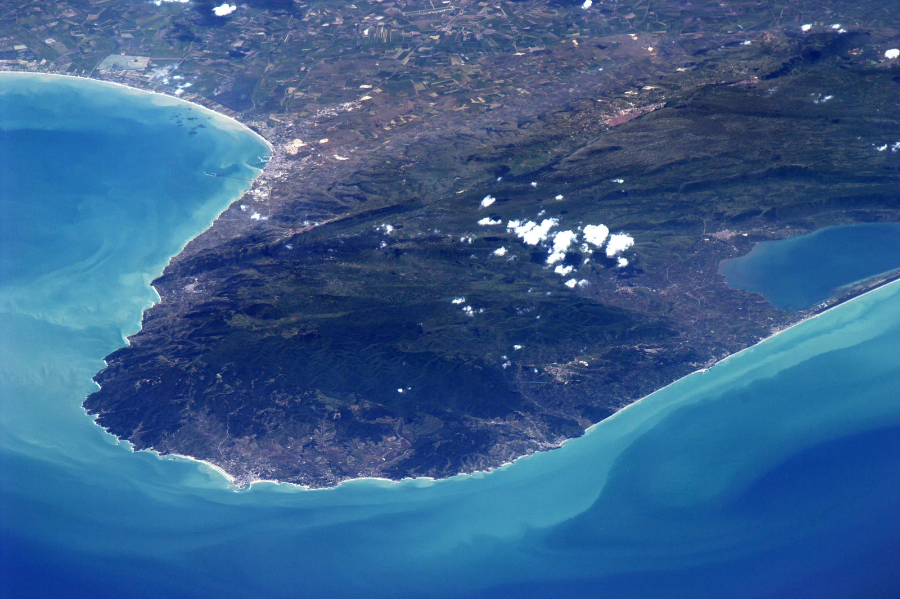
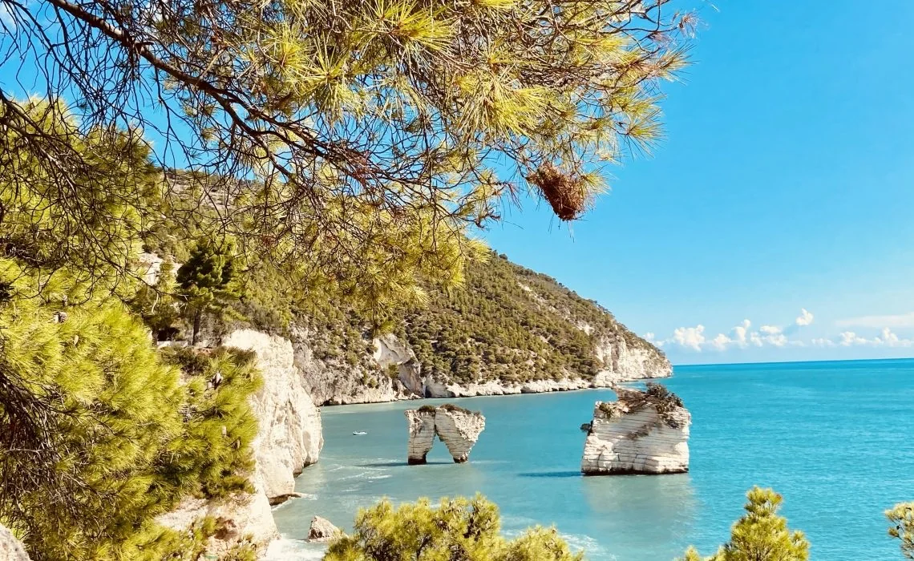

Sette giorni. È il tempo minimo per iniziare a capire il Gargano, e il tempo massimo che la maggior parte di voi ha a disposizione per una vacanza. Noi di Casa e Bottega abbiamo costruito questo itinerario basandoci su anni di ospitalità: non è una lista di monumenti, è un viaggio che vi cambia lo sguardo sul territorio. Ogni giorno ha un ritmo, ogni spostamento ha un motivo. Se volete modificare l'ordine in base ai vostri gusti, fatelo. Questo è solo un punto di partenza, una bussola, non una catena.
Giorno 1: Arrivo a Manfredonia e scoperta del centro storico
Arrivate al mattino o al pomeriggio, poco importa. Raggiungete Casa e Bottega, depositate i bagagli, prendete un respiro profondo. Poi, camminate verso il centro storico a piedi, attraversate le vie dove ancora vedrete persone che sanno il vostro nome prima che voi diciate chi siete. Visitate il Castello Svevo, sedetevi sul lungomare al tramonto, mangiate dove vi consiglia il proprietario di Casa e Bottega. Non fate niente di turismo, vivete solo. La stanchezza del viaggio deve dissolversi lentamente, non in fretta.
Giorno 2: Siponto, Castello e la magia della basilica

Giorno due, visitate la Basilica di Siponto al mattino. Vedrete la chiesa paleocristiana nella roccia, sentirete la storia che respira dalle pietre. Se potete, tornateci al tramonto, quando l'installazione di Edoardo Tresoldi cambia colore con la luce. Nel pomeriggio, risalite verso il Castello Svevo di Manfredonia, non l'avete ancora visto da dentro. Il Museo Nazionale del Gargano contiene stele daunie che nessuna guida turistica sa descrivere adeguatamente. Passate ore lì dentro, in silenzio. La sera, cena leggera a Casa e Bottega, riposo.
Giorno 3: Monte Sant'Angelo e la Foresta Umbra
Partite verso Monte Sant'Angelo di buon mattino. È a trenta minuti di auto, e la strada sale piano tra ulivi antichi. Arrivate prima che i turisti, scendete nella grotta del Santuario di San Michele Arcangelo, camminate nei caruggi bianchi senza meta. Mangiate i panzerotti da una nonna. Nel pomeriggio, se avete energie, entrate nella Foresta Umbra, un bosco di faggi e abeti a seicento metri di altitudine. Non vedrete il mare, vedrete una vegetazione che sembra il nord Italia trapiantata nel sud. È un ribaltamento della prospettiva. Tornate a Manfredonia per cena.
Giorno 4: Vieste, il borgo arroccato più bello
Vieste è il viaggio più lungo, un'ora di strada costiera. Partite di buon mattino, non andate fretti. La strada che costeggia il mare verso Vieste è una delle più belle d'Italia, non abbiate fretta di raggiungerla. Una volta a Vieste, visitate il Pizzomunno, il monolito bianco che spunta dal mare come un dito delle divinità. Entrate nelle grotte che la guidano le barche da pescatori, oppure semplicemente sedetevi sul molo e guardate il promontorio bianco. Di notte, la città si illumina in modo morbido, perdete un'ora a passeggiare nelle strade strette, cercate la Cattedrale di Santa Maria Assunta. La cena a Vieste sia pesce, sempre pesce, il pesce più fresco che mangerete della settimana.
Giorno 5: Peschici, Rodi Garganico e la costa selvaggia
Mentre siete a nord, visitare Peschici e Rodi Garganico non vi costa molto in termini di tempo di guida. Peschici è un altro borgo bianco arroccato, ancora più autentico di Vieste perché meno turistico. Rodi Garganico è un Porto tranquillo dove i pescatori ancora lavorano senza prestare attenzione ai turisti. Vedrete le spiagge selvagge, le scogliere bianche, il mare che cambia colore a ogni metro. Se vi va di nuotare, il mare di settembre è ancora caldo. Se preferite solo guardare, anche questo conta. Tornate a Manfredonia la sera, il viaggio costiero vi avrà cambiato.
Giorno 6: Mattinata, Baia delle Zagare, spiaggia libera
Giorno sei, scegliete una spiaggia e restate lì. Mattinata offre spiagge bellissime e un mare cristallino. La Baia delle Zagare è una insenatura selvaggia raggiungibile anche a piedi se amate camminare sulla scogliera. Se invece volete una spiaggia organizzata ma non turistica, Mattinata ha più di un'opzione. Non fate niente di turismo. Nuotate, leggete, guardate il cielo, i pensieri che cambiano forma con le nuvole. Questo giorno è per il riposo, non per la conquista.
Giorno 7: Ritorno e permanenza a Manfredonia
L'ultimo giorno svegliatevi di buon mattino e andate al mercato del pesce al porto, alle sei e mezzo. Vedrete il rituale che si ripete da secoli. Comprate qualcosa se volete, non importa cosa, importante è sentire la vibrazione autentica del luogo. Fate una colazione da un bar locale, cornetto e espresso, come si fa qui. Passate per le strade dove avete camminato una settimana fa e vedrete che adesso sapete i nomi dei posti. Se l'aeroporto è lontano, rimanete un po' in spiaggia prima di partire. Se l'aeroporto è vicino, rimanete comunque in spiaggia. Non abbiate fretta di andarvene.
Note pratiche per il viaggio
La strada costiera del Gargano è bellissima ma curvilinea e montagnosa. Non affrettate la guida, gli incidenti succedono ai distratti. Se prendete la macchina a noleggio, chiedete una con il cambio automatico: le curve del Gargano con il cambio manuale diventano un'esperienza stancante. I parcheggi nei borghi sono difficili da trovare, arrivate presto al mattino. I prezzi delle trattorie cambiano di mese in mese: luglio e agosto sono il doppio di novembre. Portatevi acqua e cibo da Casa e Bottega se volete risparmiare. I supermercati qui dentro sono pochi, le dispense sono cariche di prodotti locali: chiedete al proprietario cosa consiglia.
Vi aspettiamo a Casa e Bottega.
Prenota il tuo soggiorno